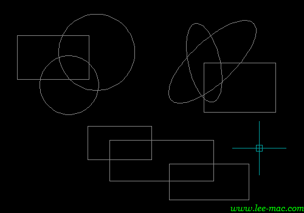

Outline Objects
This page is delivered for consistency purposes only, as part of the LeeMac sample module of DynALisp, which shows how DynALisp turns existing AutoLISP programs into a module. The program and its description are the work of Lee Mac, who keeps all the credit for them. The original page, with the latest version, is on Lee Mac's website: https://lee-mac.com/outlineobjects.html
| Function Syntax | LM-OutlineObjects – original syntax: outline (see aliases) |
| Current Version | 1.1 |
| Compatible with AutoCAD for Mac? | No |
| Compatible with AutoCAD LT? | Yes |
| Original Page | lee-mac.com/outlineobjects.html |
Program Description
This program enables the user to generate one or more closed polylines or regions representing a silhouette or outline of all objects in a selection.
Similar in functionality to the SHRINKWRAP command offered by some Vertical applications such as Civil 3D, this program offers an alternative option for those users without access to such applications.
Following a valid selection, the program first calculates the overall rectangular extents of all selected objects and constructs a temporary rectangular polyline offset outside of the calculated extents.
Using a point located within the offset margin between the extents of the selection and the temporary rectangular frame, the program then leverages the standard AutoCAD BOUNDARY command to construct a set of polylines and/or regions surrounding all 'islands' within the temporary bounding frame.
Finally, the program will prompt the user with the option of whether or not to erase the set of objects in the original selection; at this prompt, the program offers a default option of proceeding with the erase operation.
Since the construction of the outline is performed by the AutoCAD BOUNDARY command, the program is compatible with all objects which may be processed by this command - this includes all drawing objects with finite geometric extents, and both standard & dynamic blocks.
Demonstration

Bundled program notes
;;-----------------------=={ Outline Objects }==-----------------------;;
;; ;;
;; This program enables the user to generate one or more closed ;;
;; polylines or regions outlining all objects in a selection. ;;
;; ;;
;; Following a valid selection, the program calculates the overall ;;
;; rectangular extents of all selected objects and constructs a ;;
;; temporary rectangular polyline offset outside of such extents. ;;
;; ;;
;; Using a point located within the offset margin between the extents ;;
;; of the selection and temporary rectangular frame, the program then ;;
;; leverages the standard AutoCAD BOUNDARY command to construct ;;
;; polylines and/or regions surrounding all 'islands' within the ;;
;; temporary bounding frame. ;;
;; ;;
;;----------------------------------------------------------------------;;
;; Author: Lee Mac, Copyright © 2014 - www.lee-mac.com ;;
;;----------------------------------------------------------------------;;
;; Version 1.0 - 2014-11-30 ;;
;; ;;
;; - First release. ;;
;;----------------------------------------------------------------------;;
;; Version 1.1 - 2016-01-23 ;;
;; ;;
;; - Added option to erase original objects. ;;
;;----------------------------------------------------------------------;;
Command Names And Aliases
As in every DynALisp module, each program of this sample module has one main command, named LM-*, and the original command names of Lee Mac's page are kept as its aliases: they run the same command, and can be added, renamed or removed in Dyl-Suite (saved in Resources\Aliases.csv).
| Command | Aliases | Name |
|---|---|---|
| LM-OutlineObjects | OUTLINE | Outline Objects |